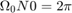

PRÁCTICA 05. SERIES DE FOURIER EN TIEMPO CONTINUO.
Contents
INTEGRANTES
- Cuevas Morales Saúl Asís
- Gonzalez Zúñiga Alexis Bryan
- Méndez Pallares Josué
- Vallejo Camarillo Moisés Eduardo
OBJETIVOS
- Realizar gráficas de series de Fourier exponenciales y trigonométricas en tiempo continuo.
- Manipulación de instrucciones en MATLAB.
- Calculo numérico de los coeficientes de Fourier.
INTRODUCCIÓN
Podemos calcular Dn numéricamente usando la DFT (la transformada discreta de Fourier), que usa las muestras de una señal periódica x (t) durante un período. El intervalo de muestreo es T segundos. Por lo tanto, hay número de muestras en un período T0. Para encontrar la relación entre Dn y las muestras de x (t). donde x (kT) es la késima muestra de x (t) y En la práctica, es imposible hacer que T ? 0 al calcular el lado derecho de la ecuación. Podemos hacer que T sea pequeño, lo que hará que los datos aumenten sin límite. Por lo tanto, ignoraremos el límite de T, con el entendimiento implícito de que T es razonablemente pequeño. T distinto de cero dará como resultado algún error computacional, este error de T distinto de cero se denomina error de alias. Por lo tanto, podemos expresar la ecuación. (6.96) como Ahora, sabemos que . Por lo tanto, $ e^{-j\Omega _0(k+N0)} = e^{j\Omega_0k} $ y . La propiedad de periodicidad significa que más allá de n = N0 / 2, los coeficientes representan los valores para n negativo. Por ejemplo, cuando . El ciclo se repite nuevamente desde n = 32 en adelante.
Al momento de realizar serie de de Fourier con exponencial compleja nos daremos cuenta que hay un inconveniente, y es que poder encontrar un resultado exacto es muy complicado llegando aun punto casi imposible, así que para poder encontrar un resultado que se acerque mas a la respuesta fija se hará una aproximación numérica, y como ya sabemos se pueden usar diferentes métodos como por ejemplo la regla de Simpson, la del trapecio, la cuadratura Gausianna, etc. Aunque sabemos que desafortunadamente estos métodos no nos darán el resultado exacto estas nos lograran acercar a dicho numero.
DESARROLLO
Problema 1. Ejemplo 6.1 Con serie y espectro trigonometrico, no es necesario entregar el código, solo la aplicación al problema especifico, debe de indicar la función y los valores de sus coeficientes (sin incluir el procedimiento).
Con 4 armónicos:
d0=0.504; dn=@(n) 0.504/(1+4*n*j); t0=0; tf=pi; f=@(t) exp(-t/2); armo=4; a=-2*pi; b=3*pi; sfc(t0,tf,dn,d0,f,armo,a,b)
Con 15 armónicos:
armo=15; sfc(t0,tf,dn,d0,f,armo,a,b)
Problema 2. Ejemplo 6.2 Con serie y espectro exponencial y A=3, no es necesario entregar el código, solo la aplicación al problema especifico, debe de indicar la función y los valores de sus coeficientes (sin incluir el procedimiento).
Con 4 armónicos:
d0=0; dn=@(n) (3*exp(-(pi*n*3i)/2)*(exp(pi*n*1i) - 1)*(2 + pi*n*1i + pi*n*exp(pi*n*1i)*1i - 2*exp(pi*n*1i)))/(2*pi^2*n^2); t0=-.5; tf=1.5; f=@(t) (((6*t).*(heaviside(t+.5)-heaviside(t-.5)))+((6-(6*t)).*(heaviside(t-.5)-heaviside(t-1.5)))); armo=4; a=-4; b=6; sfc(t0,tf,dn,d0,f,armo,a,b);
Con 15 armónicos:
armo=15; sfc(t0,tf,dn,d0,f,armo,a,b)
Problema 3. Ejemplo 6.4 Con serie y espectro exponencial, no es necesario entregar el código, solo la aplicación al problema especifico, debe de indicar la función y los valores de sus coeficientes (sin incluir el procedimiento).
Con 4 armónicos:
d0=0.5;
%F = (1/(2*pi))*int(exp(-n*j*t),t,-pi/2,pi/2) "Dn"
dn=@(n) -(exp(-(pi*n*1i)/2)*(exp(pi*n*1i) - 1)*5734161139222659i)/(36028797018963968*n);
t0=-pi/2;
tf=3*pi/2;
f=@(t) (t>-pi/2 & t<pi/2) + 0*(t>pi/2 & t<3*pi/2);
armo=4;
a=-4*pi;
b=5*pi;
sfc(t0,tf,dn,d0,f,armo,a,b)
Con 15 armónicos:
armo=15; sfc(t0,tf,dn,d0,f,armo,a,b)
Problema 4. Ejemplo 6.5 Con serie y espectro exponencial, no es necesario entregar el código, solo la aplicación al problema especifico, debe de indicar la función y los valores de sus coeficientes (sin incluir el procedimiento).
Con 4 armónicos:
d0=2/pi; d1=0; dn=@(n) ((1/(2*pi*(1-n^2))).*((2*exp(-j*n*pi))+(exp(-2*pi*j*n))+1)); t0=0; tf=2*pi; f=@(t) (((sin(t)).*(0<=t & t<pi))+((-sin(t)).*(pi<=t & t<=(2*pi)))); armo=4; a=-4*pi; b=6*pi; sfc2(t0,tf,dn,d0,d1,f,armo,a,b);
Con 15 armónicos:
armo=15; sfc2(t0,tf,dn,d0,d1,f,armo,a,b);
Problema 5. Ejemplo 6.7 Con serie y espectro exponencial y sin incluir la gráfica de f, error ni energía del error, no es necesario entregar el código, solo la aplicación al problema especifico, debe de indicar la función y los valores de sus coeficientes (sin incluir el procedimiento).
Con 4 armónicos:
T0=3;
d0=1/T0;
%F = (1/(T0))*int(dirac(t),t,-T0/2,T0/2) "Dn"
dn=@(n) 1/6;
t0=0;
tf=T0;
f=@(t) dirac(t);
armo=4;
a=-T0*2;
b=T0*2;
sfc3(t0,tf,dn,d0,f,armo,a,b)
Con 15 armónicos:
armo=15; sfc3(t0,tf,dn,d0,f,armo,a,b)
Problema 6. Elabore un código similar al COMPUTER EXAMPLE C6.2 que se encuentra al final de la sección 6.2 de Lathi para el Ejempo 6.2 con los datos indicados anteriormente (no utilice inline).
x= @(t) (((6*t).*(heaviside(t+.5)-heaviside(t-.5)))+((6-(6*t)).*(heaviside(t-.5)-heaviside(t-1.5)))); t = linspace (-4, 6,1000); sumterms = zeros(16, length(t)); sumterms(1,:) = 0; dn=@(n) (3*exp(-(pi*n*3i)/2)*(exp(pi*n*1i) - 1)*(2 + pi*n*1i + pi*n*exp(pi*n*1i)*1i - 2*exp(pi*n*1i)))/(2*pi^2*n^2); for n = 1:size(sumterms,1)-1; sumterms(n+1,:) = dn(-n)*exp(pi*-n*t*j)+dn(n)*exp(pi*n*t*j); end x_N = cumsum (sumterms); figure(1); clf; ind = 0; for N = [0,1:2:size(sumterms, 1)-1], ind = ind+1; subplot (3,3,ind); plot (t,x_N((N+1),:), 'k',t,x(t), 'k--'); axis ([-4 6 -3 3]); xlabel ('t'); ylabel(['x_{',num2str(N),'} (t)']); end
Problema 7. Elabore un código que implemente el algoritmo de trapecio compuesto para n=15. Utilice este código para aproximar del ejemplo de la práctica. Ahora implemente el código COMPUTER EXAMPLE C6.4 que se encuentra al final de la sección 6.6 de Lathi, y calcule nuevamente los coeficientes del ejemplo propuesto. Muestre una tabla que contenga los coeficientes mencionados calculados con los dos algoritmos y de forma exacta, ¿Qué algortmo aproxima mejor a los coeficientes?, para esto compare los coefientes con el valor absoluto de la resta.
Para calcular los Dn con trapecio el código se muestra en los apéndices
f=@(t) exp(-t/2); n=15 a=0; b=pi; Trapecio2(f,a,b,n)
n =
15
0.5047
0.0301 - 0.1168i
0.0082 - 0.0583i
0.0040 - 0.0361i
0.0025 - 0.0237i
Valores de Dn con calculo con el código del Ejemplo C6.4 del Lathi.
D_n =
0.5107 + 0.0000i 0.0370 - 0.0918i 0.0192 + 0.0000i 0.0370 + 0.0918i
Tabla de valores de Dn, calculados con trapecio compuesto, C6_4 del Lathi y calculados (Valores Exactos).
Dn=[0;1;2;3;4]; ValoresExactos = [0.50427;0.0297 - 0.1187i;0.0078 - 0.0621i;0.0035 - 0.0417i;0.0020 - 0.0314i]; Trapecio= [0.5084;0.0342 + 0.1017i;0.0136 + 0.0250i;0.0136 - 0.0250i;0.0342 - 0.1017i]; Lathi= [0.505315980850380 + 0.00000000000000i;0.0307207093981665 - 0.114484199166819i;0.00888171717326986 - 0.0535548602242132i;0.00472757102671926 - 0.0285062449745603i;0.00342977138688428 - 0.0127814311012021i]; T = table(Dn,ValoresExactos,Trapecio,Lathi)
T =
Dn ValoresExactos Trapecio Lathi
__ _______________ ______________ ___________________
0 0.50427+0i 0.5084+0i 0.50532+0i
1 0.0297-0.1187i 0.0342+0.1017i 0.030721-0.11448i
2 0.0078-0.0621i 0.0136+0.025i 0.0088817-0.053555i
3 0.0035-0.0417i 0.0136-0.025i 0.0047276-0.028506i
4 0.002-0.0314i 0.0342-0.1017i 0.0034298-0.012781i
De lo anterior se deduce que el mejor algorítmo para la aproximación de los coeficientes de Dn es el que nos muestra el Ejemplo C6.4 del Lathi.
APÉNDICES
Código de la función sfc utilizada para resolver Problema 1 a Problema 3
% function sfc(t0,tf,dn,d0,f,armo,a,b) % t0 el valor inicial para calcular la serie % tf el valor final donde calcular la serie % dn función de la fórmula de los dn % f función original % armo número de armonicos a utilizar en la gráfica % a, b intevalo para realizar la grafica de la serie
w0=2*pi/(tf-t0);
sf=d0; t=a:0.0001:b;
for n=1:armo sf=sf+dn(-n)*exp(w0*-n*t*j)+dn(n)*exp(w0*n*t*j); end hFig = figure; set(hFig, 'Position', [0 0 900 900]) subplot(3,2,1) plot(t,sf,'LineWidth',2) grid on legend('Serie de Fourier','Location','Best') xlabel('t','FontWeight','bold','FontSize',16)
sf=d0; t1=t0:0.0001:tf;
for n=1:armo sf=sf+dn(-n)*exp(w0*-n*t1*j)+dn(n)*exp(w0*n*t1*j); end
subplot(3,2,2) plot(t1,f(t1),'r','LineWidth',2) grid on hold on plot(t1,sf,'b','LineWidth',2) legend('Función original','Serie de Fourier ','Location','Best') xlabel('t','FontWeight','bold','FontSize',16) nn=-armo:armo; axis auto
subplot(3,2,4) e=f(t1)-sf; plot(t1,e,'LineWidth',2) title('Error','FontWeight','bold','FontSize',16) xlabel('t','FontWeight','bold','FontSize',16) axis auto grid on
subplot(3,2,6) e=f(t1)-sf; area(t1,e.^2) legend('Energia del error','Location','Best') xlabel('t','FontWeight','bold','FontSize',16) axis auto grid on
absdn=zeros(1,length(nn)); cont=1; for i =-armo:armo if i==0 absdn(cont)=d0; end
absdn(cont)=dn(i);
cont=cont+1;
endsubplot(3,2,3) stem(w0*nn,abs(absdn),'LineWidth',2) title('Espectro de magnitud D_n ','FontWeight','bold','FontSize',16) xlabel('\omega','FontWeight','bold','FontSize',16) grid on
subplot(3,2,5) % % stem(w0*nn,angle(absdn),'LineWidth',2) % % title('Espectro de fase, \angle de D_n ','FontWeight','bold','FontSize',16) % % xlabel('\omega','FontWeight','bold','FontSize',16) grid on
end
Código sfc2 utilizado para resolver Problema 4
function sfc2(t0,tf,dn,d0,d1,f,armo,a,b) % t0 el valor inicial para calcular la serie % tf el valor final donde calcular la serie % dn función de la fórmula de los dn % f función original % armo número de armonicos a utilizar en la gráfica % a, b intevalo para realizar la grafica de la serie
w0=2*pi/(tf-t0);
sf=d0+d1; t=a:0.0001:b;
for n=2:armo sf=sf+dn(-n)*exp(w0*-n*t*j)+dn(n)*exp(w0*n*t*j); end hFig = figure; set(hFig, 'Position', [0 0 900 900]) subplot(3,2,1) plot(t,sf,'LineWidth',2) grid on legend('Serie de Fourier','Location','Best') xlabel('t','FontWeight','bold','FontSize',16)
sf=d0; t1=t0:0.0001:tf;
for n=2:armo sf=sf+dn(-n)*exp(w0*-n*t1*j)+dn(n)*exp(w0*n*t1*j); end
subplot(3,2,2) plot(t1,f(t1),'r','LineWidth',2) grid on hold on plot(t1,sf,'b','LineWidth',2) legend('Función original','Serie de Fourier ','Location','Best') xlabel('t','FontWeight','bold','FontSize',16) nn=-armo:armo; axis auto
subplot(3,2,4) e=f(t1)-sf; plot(t1,e,'LineWidth',2) title('Error','FontWeight','bold','FontSize',16) xlabel('t','FontWeight','bold','FontSize',16) axis auto grid on
subplot(3,2,6) e=f(t1)-sf; area(t1,e.^2) legend('Energia del error','Location','Best') xlabel('t','FontWeight','bold','FontSize',16) axis auto grid on
absdn=zeros(1,length(nn)); cont=1; for i =-armo:armo if i==0 absdn(cont)=d0; end
absdn(cont)=dn(i);
cont=cont+1;
endsubplot(3,2,3) stem(w0*nn,abs(absdn),'LineWidth',2) title('Espectro de magnitud D_n ','FontWeight','bold','FontSize',16) xlabel('\omega','FontWeight','bold','FontSize',16) grid on
subplot(3,2,5) % % stem(w0*nn,angle(absdn),'LineWidth',2) % % title('Espectro de fase, \angle de D_n ','FontWeight','bold','FontSize',16) % % xlabel('\omega','FontWeight','bold','FontSize',16) grid on
end
Código sfc3 utilizado para resolver Problema 5.
function sfc3(t0,tf,dn,d0,f,armo,a,b) % t0 el valor inicial para calcular la serie % tf el valor final donde calcular la serie % dn función de la fórmula de los dn % f función original % armo número de armonicos a utilizar en la gráfica % a, b intevalo para realizar la grafica de la serie
w0=2*pi/(tf-t0);
sf=d0; t=a:0.0001:b;
for n=1:armo sf=sf+dn(-n)*exp(w0*-n*t*j)+dn(n)*exp(w0*n*t*j); end hFig = figure; set(hFig, 'Position', [0 0 900 900]) subplot(2,2,1) plot(t,sf,'LineWidth',2) grid on legend('Serie de Fourier','Location','Best') xlabel('t','FontWeight','bold','FontSize',16)
sf=d0; t1=t0:0.0001:tf;
for n=1:armo sf=sf+dn(-n)*exp(w0*-n*t1*j)+dn(n)*exp(w0*n*t1*j); end
subplot(2,2,2) plot(t1,sf,'b','LineWidth',2) grid on legend('Serie de Fourier ','Location','Best') xlabel('t','FontWeight','bold','FontSize',16) nn=-armo:armo; axis auto
absdn=zeros(1,length(nn)); cont=1; for i =-armo:armo if i==0 absdn(cont)=d0; end
absdn(cont)=dn(i);
cont=cont+1;
endsubplot(2,2,3) stem(w0*nn,abs(absdn),'LineWidth',2) title('Espectro de magnitud D_n ','FontWeight','bold','FontSize',16) xlabel('\omega','FontWeight','bold','FontSize',16) grid on
subplot(2,2,4) % % stem(w0*nn,angle(absdn),'LineWidth',2) % % title('Espectro de fase, \angle de D_n ','FontWeight','bold','FontSize',16) % % xlabel('\omega','FontWeight','bold','FontSize',16) grid on
end
Código de la función Trapecio utilizada como función auxiliar en la función Trapecio2.
function aprox=Trapecio(f,a,b,n) h=(b-a)/n; aprox=f(a)+f(b); for i=1:n-1 x=a+i*h; aprox=aprox+2*f(x); end aprox=(h/2)*aprox;a=0; return end
Código de la función Trapecio2 utilizada para sacar los valors mediante trapecio compuesto de Dn en el Problema 7.
function Trapecio2(f,a,b,n) T=b-a; w=(2*pi)/T; f0=@(t)(1/T).*f(t); fa1=@(t)(2/T).*f(t).*cos(1*w*t); fa2=@(t)(2/T).*f(t).*cos(2*w*t); fa3=@(t)(2/T).*f(t).*cos(3*w*t); fa4=@(t)(2/T).*f(t).*cos(4*w*t); fb1=@(t)(2/T).*f(t).*sin(1*w*t); fb2=@(t)(2/T).*f(t).*sin(2*w*t); fb3=@(t)(2/T).*f(t).*sin(3*w*t); fb4=@(t)(2/T).*f(t).*sin(4*w*t); D0=Trapecio(f0,a,b,n); A1=Trapecio(fa1,a,b,n); A2=Trapecio(fa2,a,b,n); A3=Trapecio(fa3,a,b,n); A4=Trapecio(fa4,a,b,n); B1=Trapecio(fb1,a,b,n); B2=Trapecio(fb2,a,b,n); B3=Trapecio(fb3,a,b,n); B4=Trapecio(fb4,a,b,n); D1=(1/2)*(A1-(B1*j)); D2=(1/2)*(A2-(B2*j)); D3=(1/2)*(A3-(B3*j)); D4=(1/2)*(A4-(B4*j)); disp(D0); disp(D1); disp(D2); disp(D3); disp(D4); end
Código usado para calcular los coeficientes de Dn con Ejemplo C6.4 del Lathi.
T_0 = pi; N_0 = 5; T = T_0/N_0; t = (0:T:T*(N_0-1))'; M = 15; x = exp(-t/2); x(1) = (exp(-pi/2) + 1)/2; D_n = fft (x)/N_0; n = [-N_0/2:N_0/2-1]'; clf; subplot(2, 2, 1); stem(n, abs(fftshift (D_n)),'k'); axis([-M M -.1 .6]); xlabel('n'); ylabel('|D_n|'); subplot(2, 2, 2); stem(n, angle(fftshift(D_n)),'k'); axis([-M M -pi pi]); xlabel ('n'); ylabel('\angle D n [rad]'); n = [0:M]; C_n(1) = abs(D_n(1)); C_n(2:M+1) = 2*abs (D_n(2:M+1)); theta_n(1) = angle(D_n(1)); theta_n(2:M+1) = angle(D_n(2:M+1)); subplot(2, 2, 3); stem(n,C_n,'k'); xlabel('n'); ylabel('C_n'); subplot(2, 2, 4); stem(n,theta_n,'k'); xlabel('n'); ylabel('\theta n [rad]');
REFERENCIAS
- B. P. Lathi. (2005). Linear Systems and Signals. 198 Madison Avenue, New York, New York 10016: Oxford University Press.
- MathWorks. Dirac: Dirac delta function. Recuperado de: https://la.mathworks.com/help/symbolic/dirac.html
- MathWorks. Integral: Numerical integration. Recuperado de: https://la.mathworks.com/help/matlab/ref/integral.html
- MathWorks. Create and work with tables. Recuperado de: https://la.mathworks.com/help/matlab/ref/integral.html